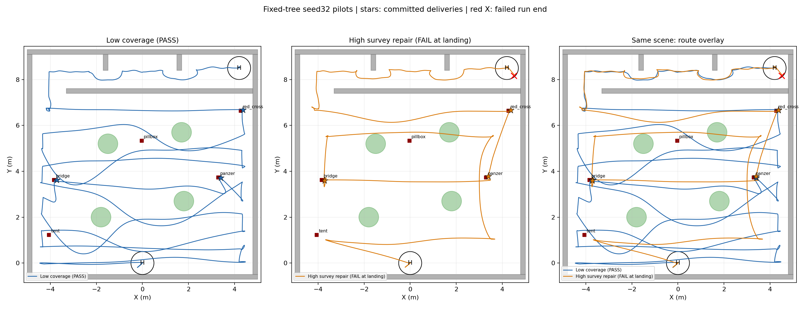
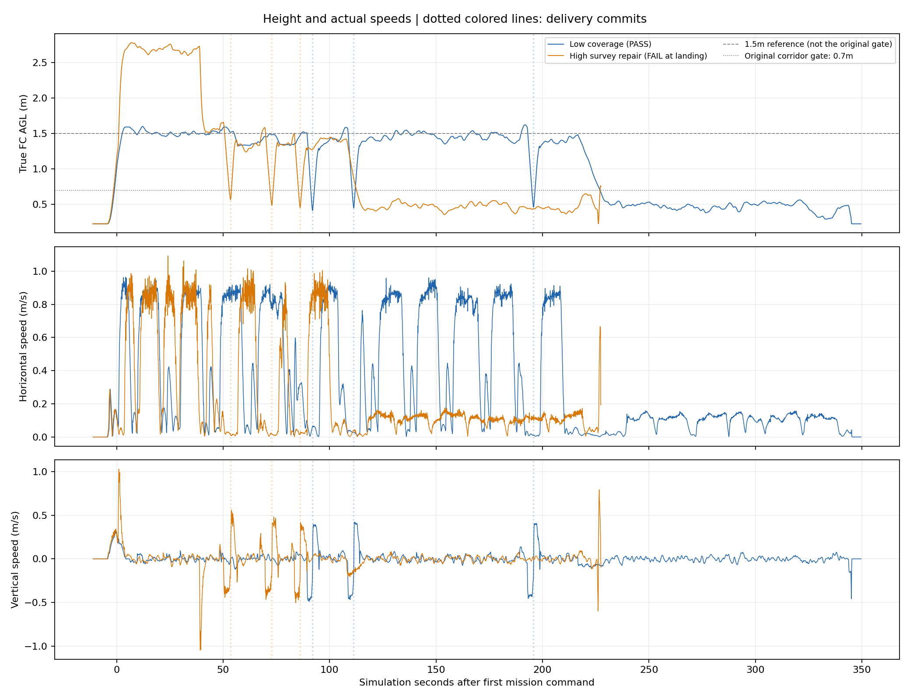
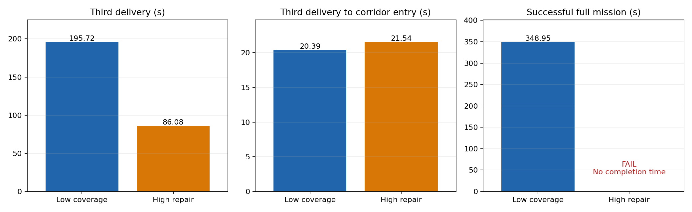
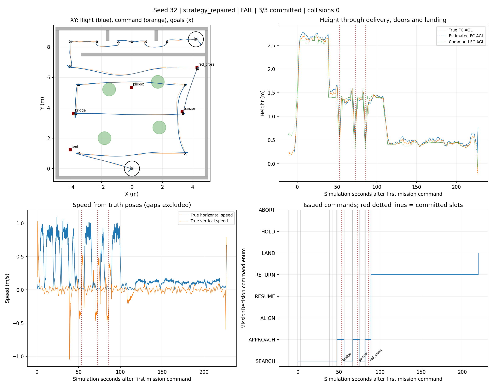
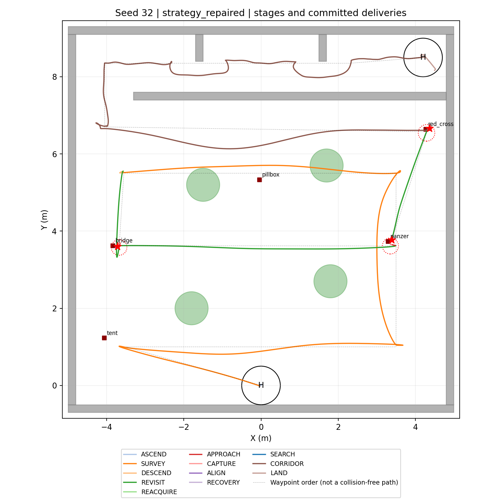
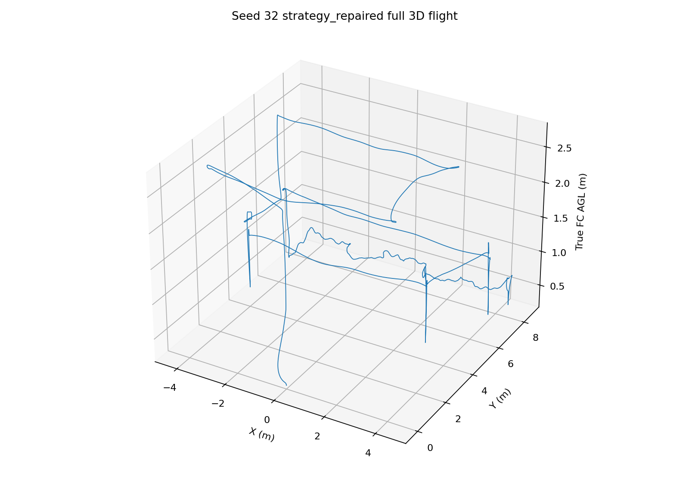
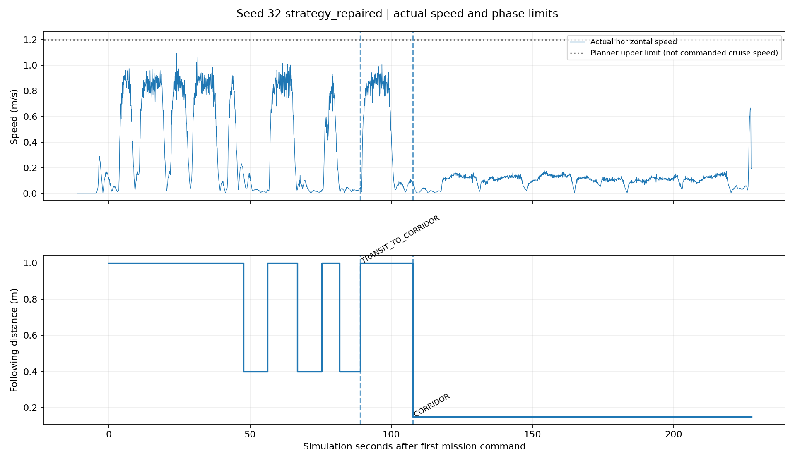
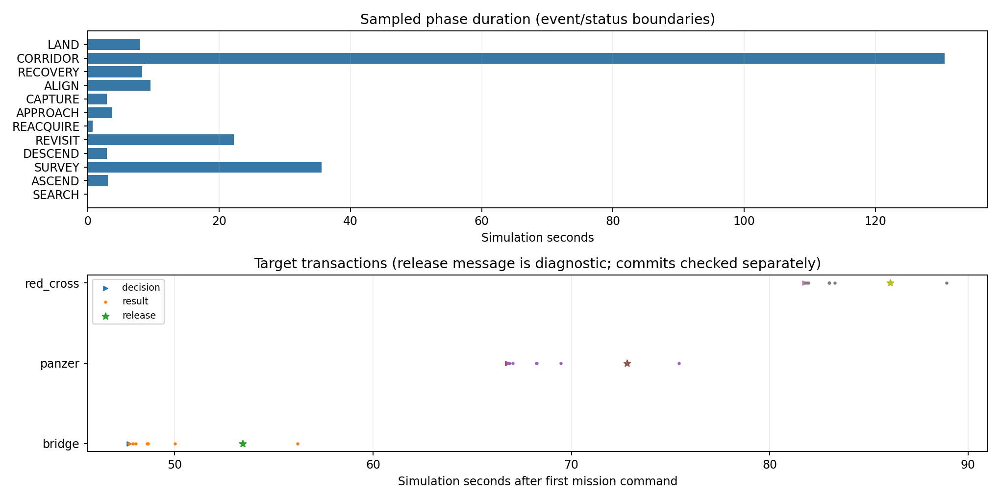

原覆盖：PASS，三投195.716s，整场348.954s。最新高位修复：三投86.080s、两门通过、0碰撞；H降落阶段触发原0.7m走廊高度门槛，整场FAIL。
高位缩短虚拟障碍柱的方案不能作为“禁止从障碍上方飞越”规则下的合规验收。本页保留实际试验图，不据此批准该方案或追改原Gate。两轮都是固定树seed32先导，不是全随机矩阵。
baseline在走廊矩形内已记录的FC最高离地高度0.563m；strategy_repaired在走廊矩形内已记录的FC最高离地高度0.762m。只覆盖原Gate停止前的数据，不能推断继续飞行会成功。









